UAVs@Berkeley lab


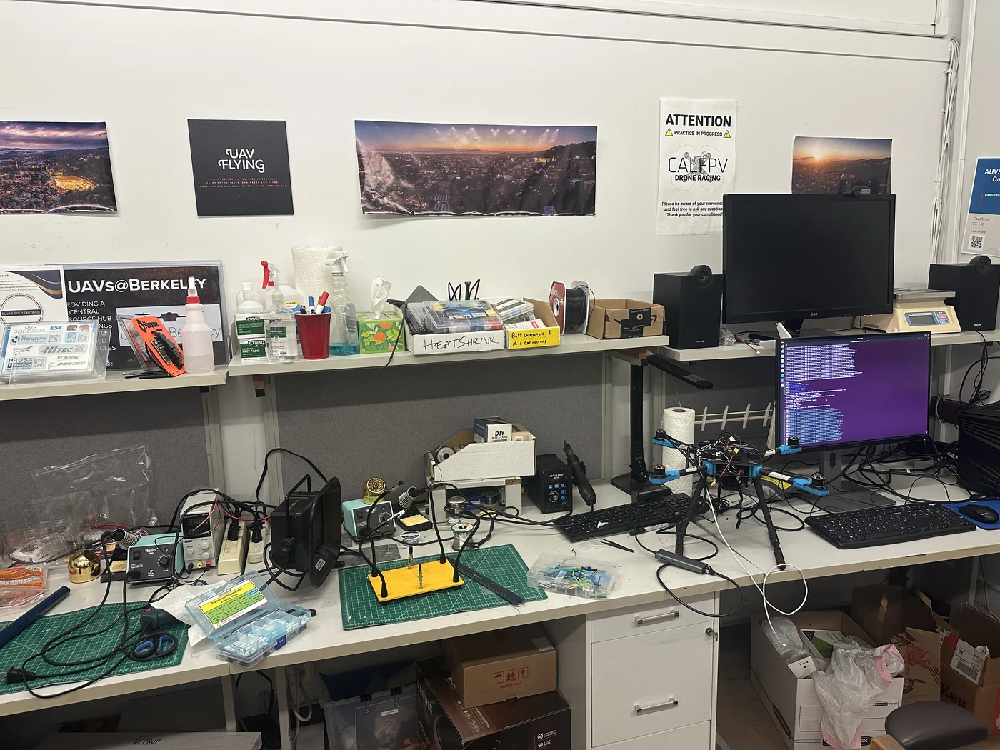
UC BERKELEY · CS180 · FALL 2026
Grant Luo
Recovering homographies from manual matches, rectifying planar objects, and blending overlapping photographs.
These three pairs show the UAVs@Berkeley lab and the exterior and interior of Wheeler Hall. Each pair has substantial overlap and is intended to approximate a camera rotation about a fixed center. Residual parallax and moving subjects are visible in some final mosaics.

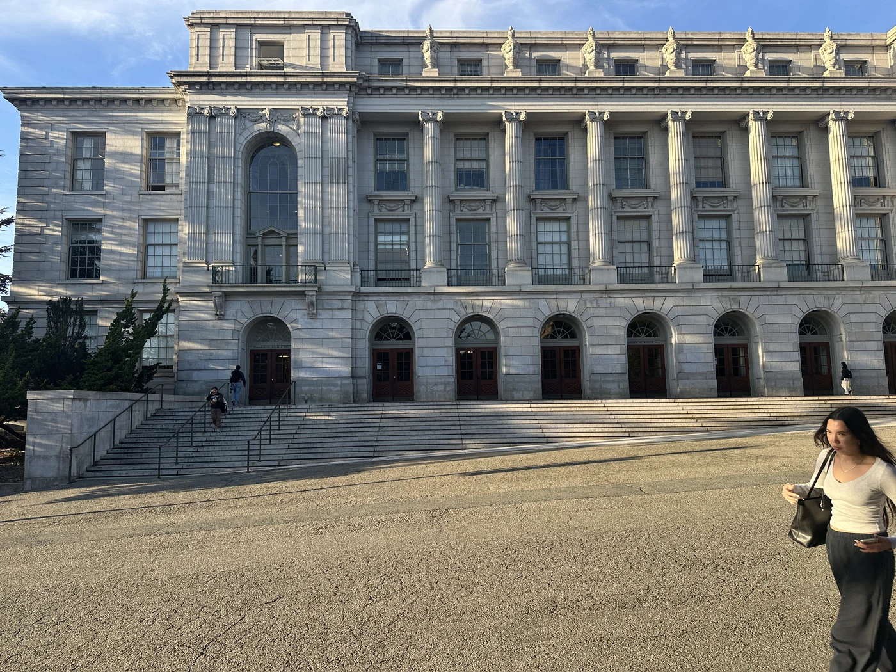
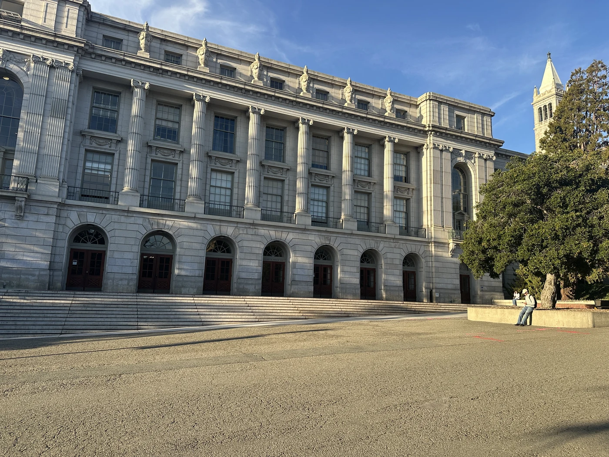
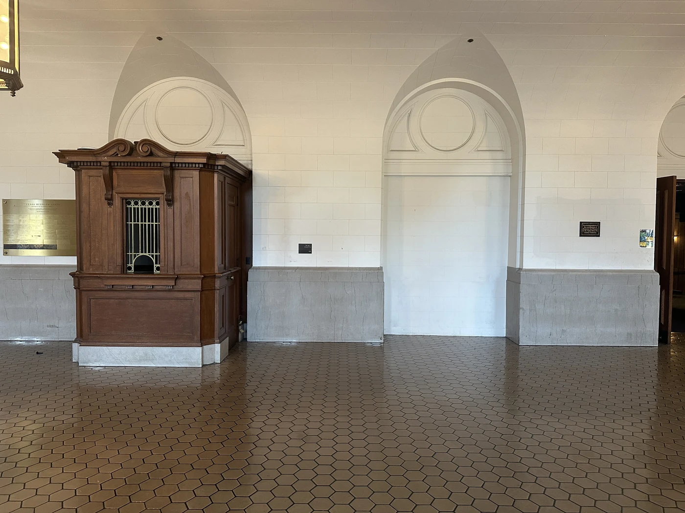
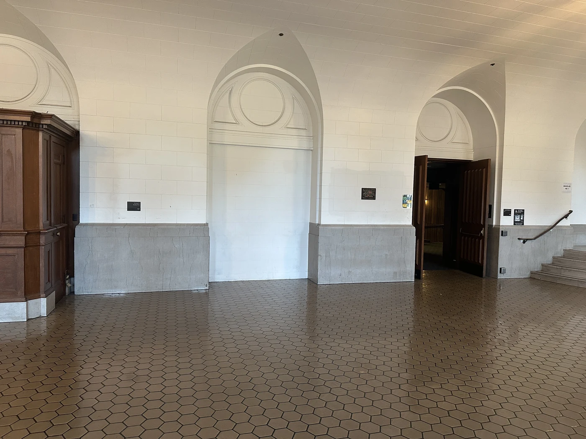
Source photographs and point coordinates use the original image resolution. Display copies are resized for the web. Click any image to inspect it separately.
I manually selected corresponding points and estimated a 3 × 3 homography H with eight unknowns, fixing h33 = 1. Each pair contributes two equations. Using more than four pairs gives an overdetermined system, solved with a least-squares solver.
With h = [h11, h12, h13, h21, h22, h23, h31, h32]T, each correspondence supplies this block of A and b:
[ x y 1 0 0 0 −xx′ −yx′ ] [ x′ ] [ 0 0 0 x y 1 −xy′ −yy′ ] h = [ y′ ] Stack all point pairs: A h = b Solve: ĥ = argmin_h ‖A h − b‖²
8 manually selected pairs · A is 16 × 8 · mean reprojection error: 3.66 px.
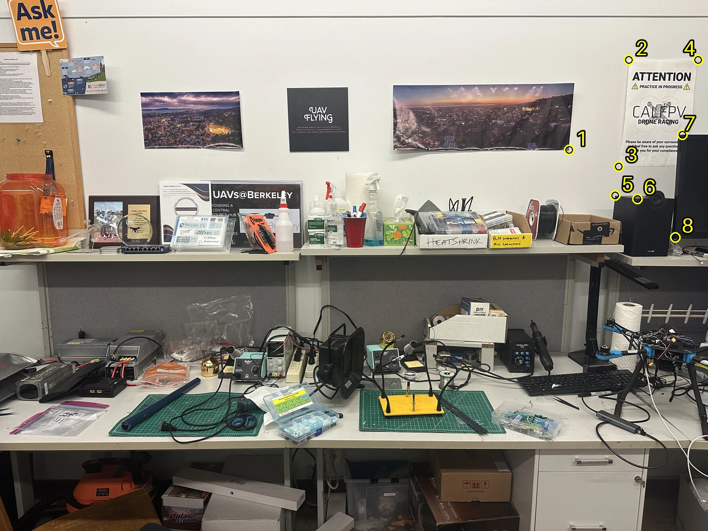
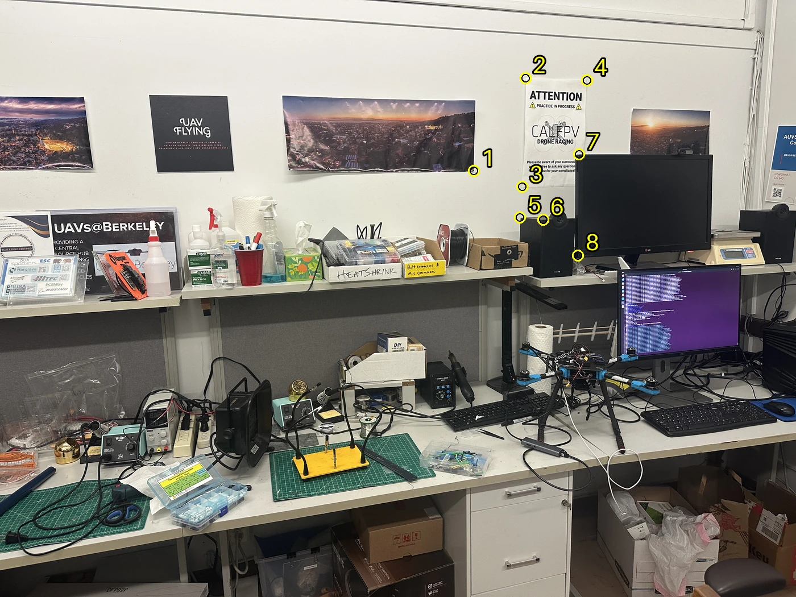
H maps image 1 into image 2. Errors are measured at the selected points in the original image resolution.
[ 1.54233 0.108255 -1693.81 ] [ 0.089082 1.32739 -195.556 ] [ 0.000125842 9.31129e-06 1 ]
9 manually selected pairs · A is 18 × 8 · mean reprojection error: 4.05 px.
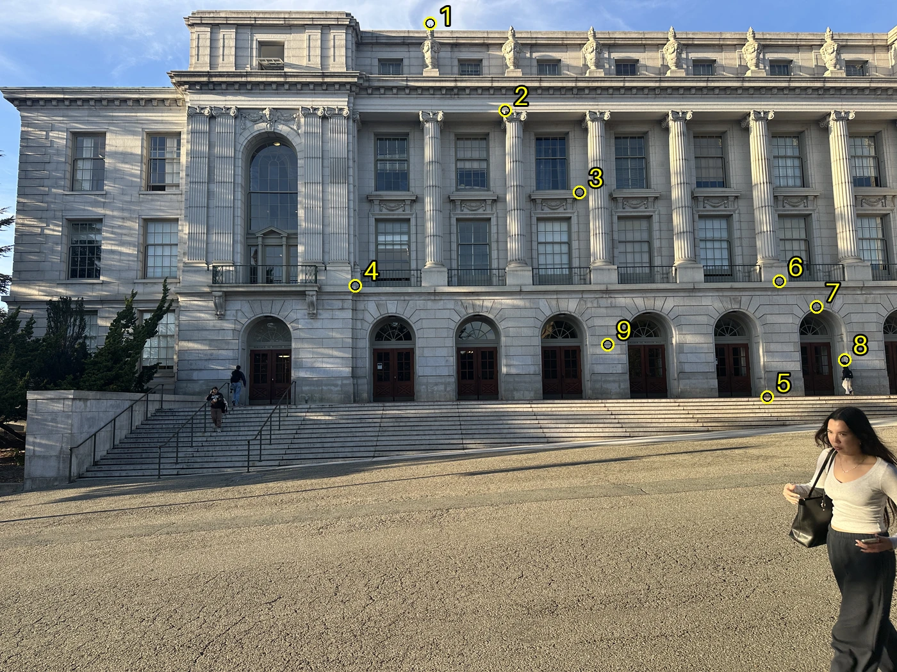
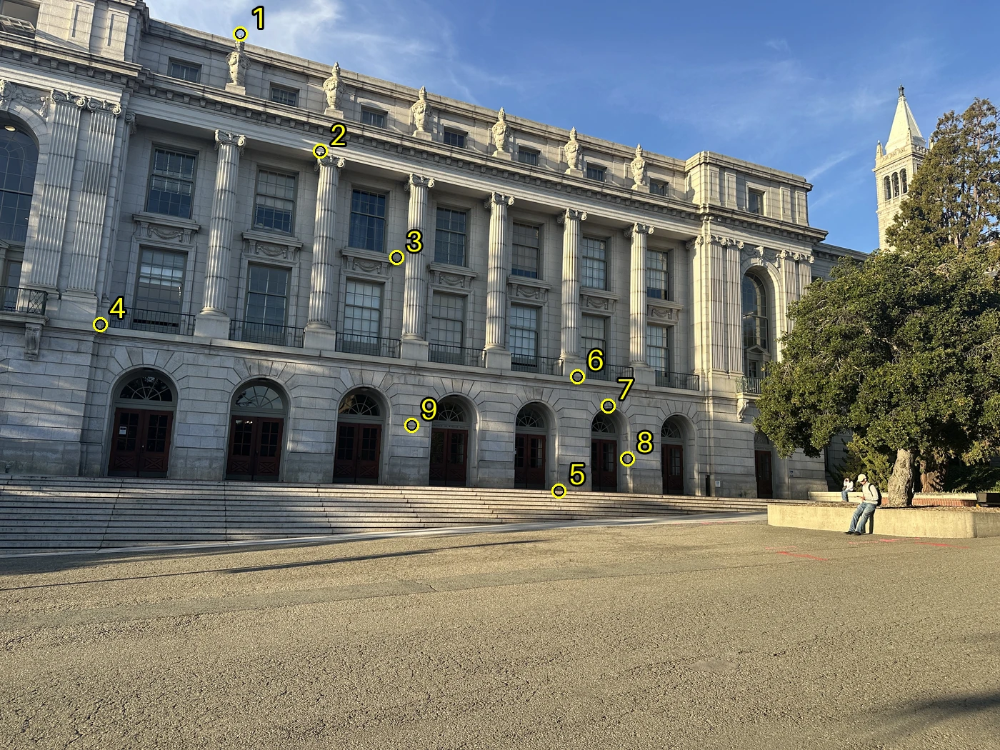
H maps image 1 into image 2. Errors are measured at the selected points in the original image resolution.
[ 1.81614 -0.211557 -2105.99 ] [ 0.496593 1.40938 -920.543 ] [ 0.000221323 -5.02949e-05 1 ]
8 manually selected pairs · A is 16 × 8 · mean reprojection error: 3.15 px.
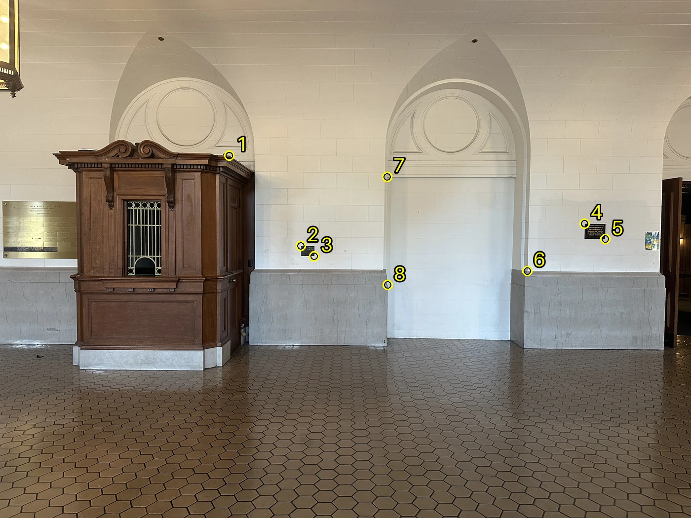
H maps image 1 into image 2. Errors are measured at the selected points in the original image resolution.
[ 1.61964 -0.033418 -1696.5 ] [ 0.24157 1.33419 -599.065 ] [ 0.000160956 -2.07657e-05 1 ]
I used inverse warping: for every output pixel, H−1 gives its source location. Automatic canvas bounds come from transforming the four source corners; the minimum x and y coordinates provide the canvas offset. A validity mask marks locations outside the source as transparent.
Pixel centers use (x, y), while arrays are indexed by row, then column. For output array position (row r, column c), I inverse-map [c + xmin, r + ymin, 1]T and divide by the third coordinate.
Nearest neighbor rounds to the nearest pixel. Bilinear interpolation uses the four neighbors, with α = x − ⌊x⌋ and β = y − ⌊y⌋:
C = (1−α)(1−β) I[y₀, x₀] + α(1−β) I[y₀, x₀+1] + (1−α)β I[y₀+1, x₀] + αβ I[y₀+1, x₀+1]
For each object, I mapped its four corners (top-left, top-right, bottom-right, bottom-left) to a rectangle with its measured aspect ratio. Rectification uses a fixed destination crop, so only the object is included.
Measured width × height: 17.8 × 25.3 cm. Output: 890 × 1265 pixels, preserving the measured proportions at 50 pixels/cm.
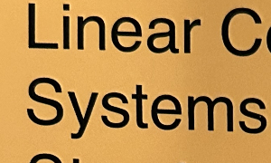
Source corners and destination size · Rectification homography
Measured width × height: 30 × 42 cm. Output: 1500 × 2100 pixels, preserving the measured proportions at 50 pixels/cm.
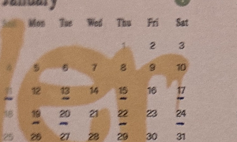
Source corners and destination size · Rectification homography
| Image | Output | Nearest | Bilinear | Time ratio |
|---|---|---|---|---|
| Book | 890 × 1265 | 0.066 s | 0.171 s | 2.6× |
| Poster | 1500 × 2100 | 0.142 s | 0.387 s | 2.7× |
Nearest neighbor is faster because it reads one source pixel. It leaves more jagged text edges and fine-detail aliasing. Bilinear blends four pixels, giving smoother edges at a higher runtime cost and slightly softening small details. The text crops make the difference easier to see; neither method includes an antialiasing prefilter for strong downsampling.
I kept image 2’s projection as the reference. The union of its bounds and the transformed bounds of image 1 defines a shared canvas. Both images are sampled onto that canvas using bilinear inverse warping; image 2 uses the identity transform.
For feathering, each image receives weights equal to the distance from a valid pixel to its mask boundary, using a distance transform. A zero border is added around each mask. The normalized weighted average preserves non-overlapping regions and softens the transition in the overlap:
Locations with no valid source data remain transparent. Feathering reduces seams but does not correct geometric misalignment or moving subjects.
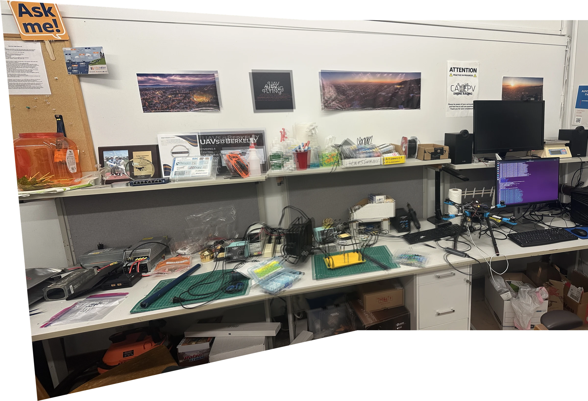
The right side aligns near the selected points, but the posters and equipment farther left show substantial ghosting. Matches are concentrated on the right; parallax and extrapolation limit the alignment elsewhere.
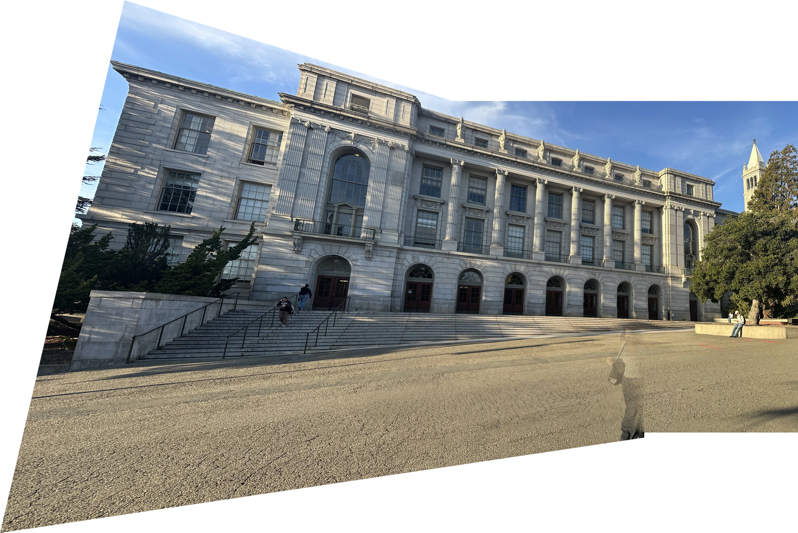
The building facade aligns well. A person in the foreground appears partially transparent because they moved between exposures; feathering cannot correct motion.
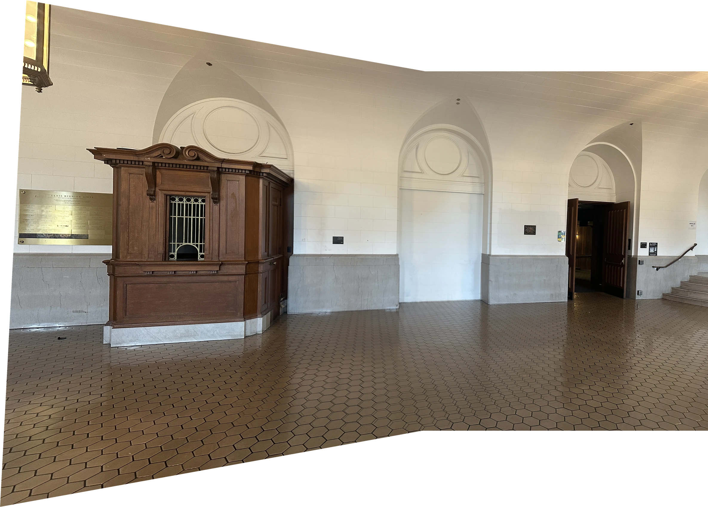
The wall and booth largely align, while the arch and floor show some doubling. The small error at the clicked points does not guarantee alignment at other depths.